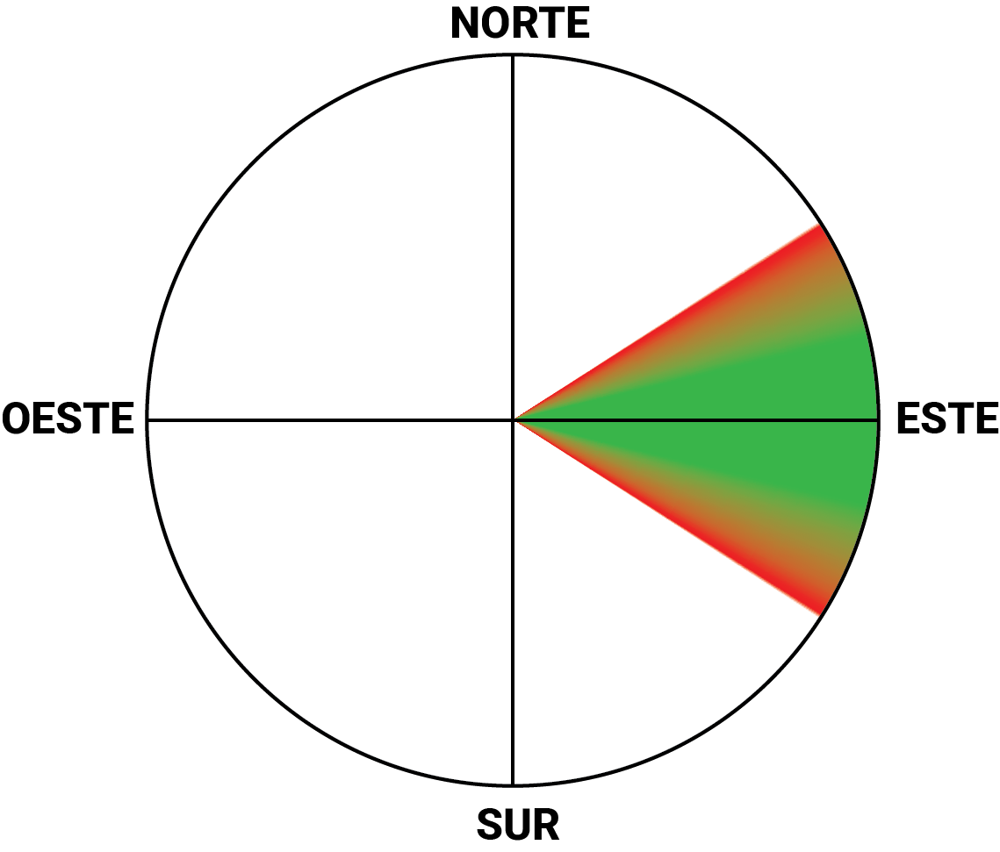
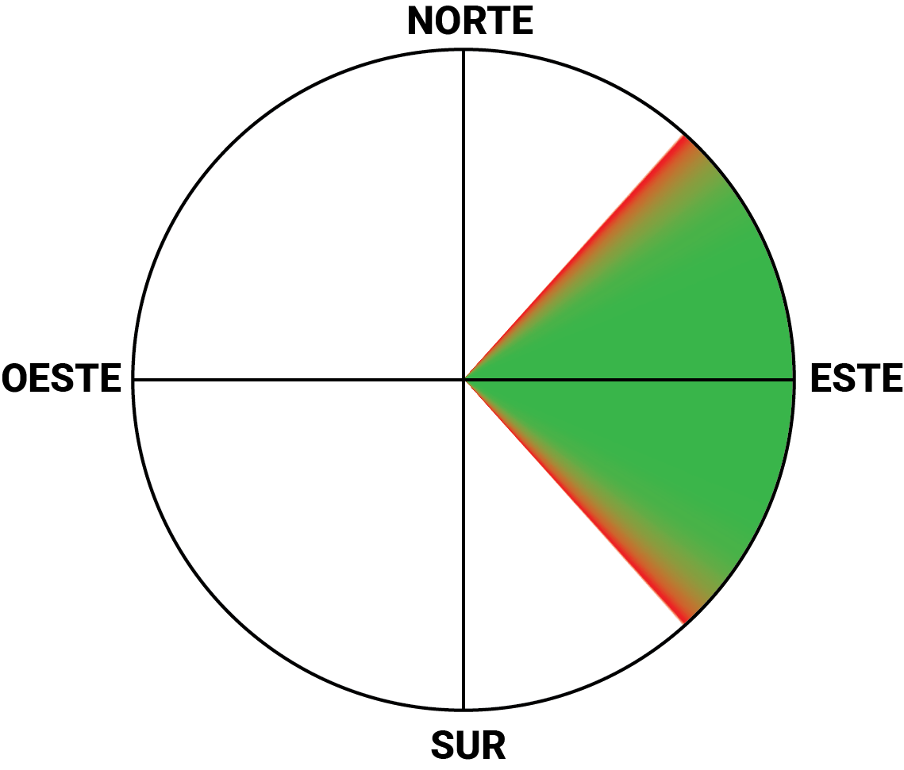
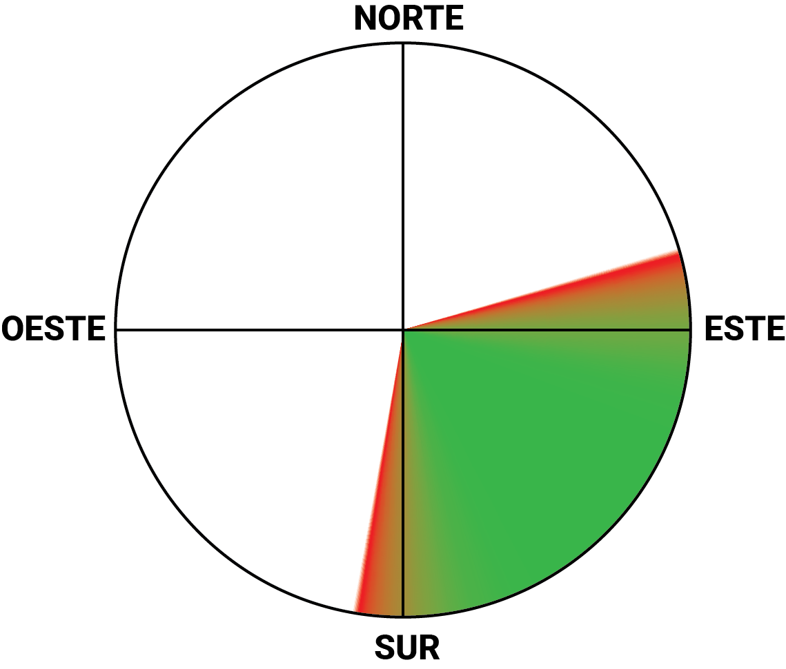
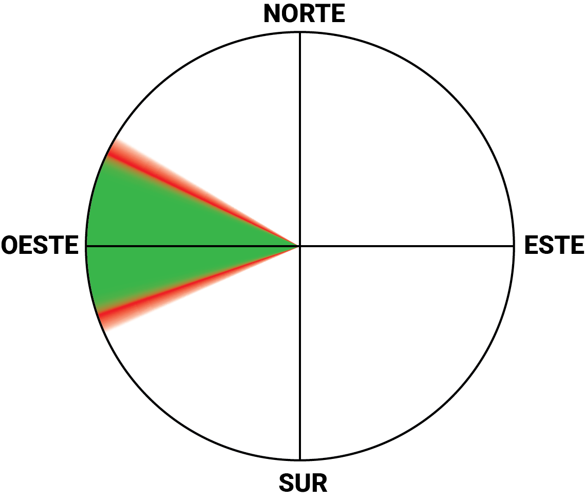
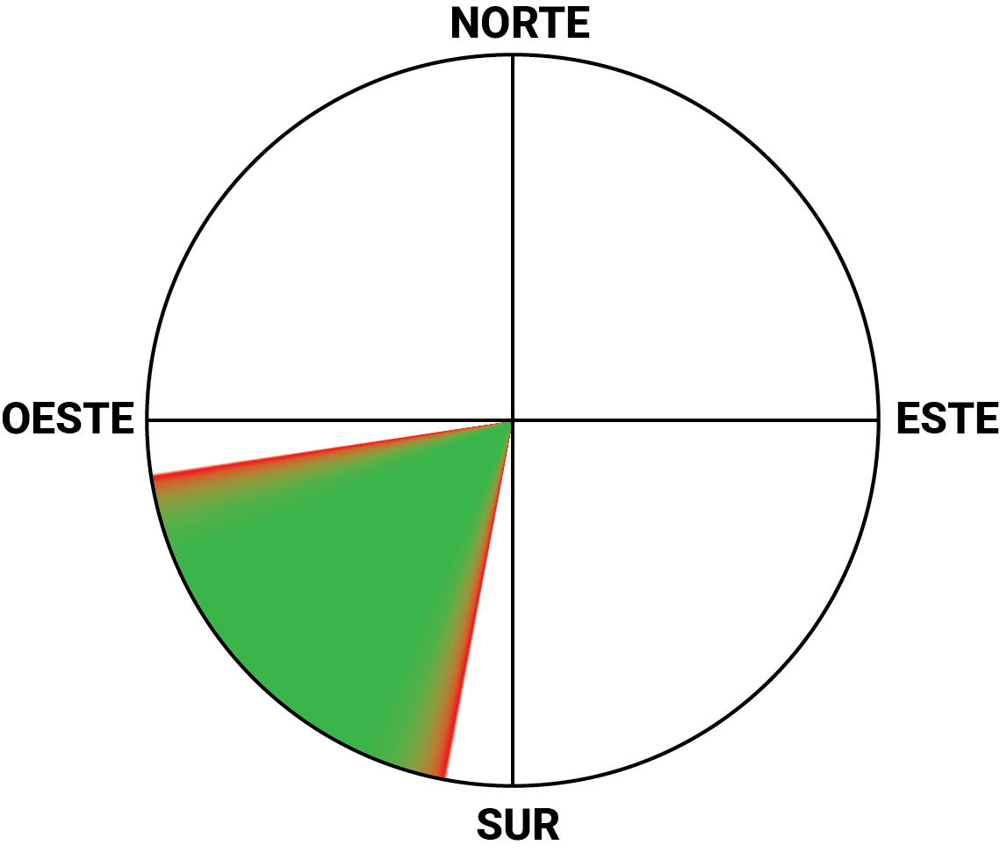
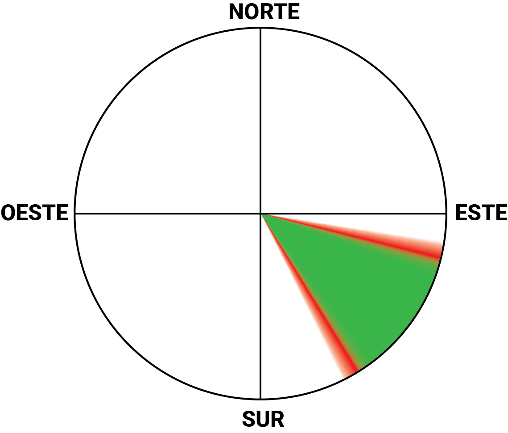
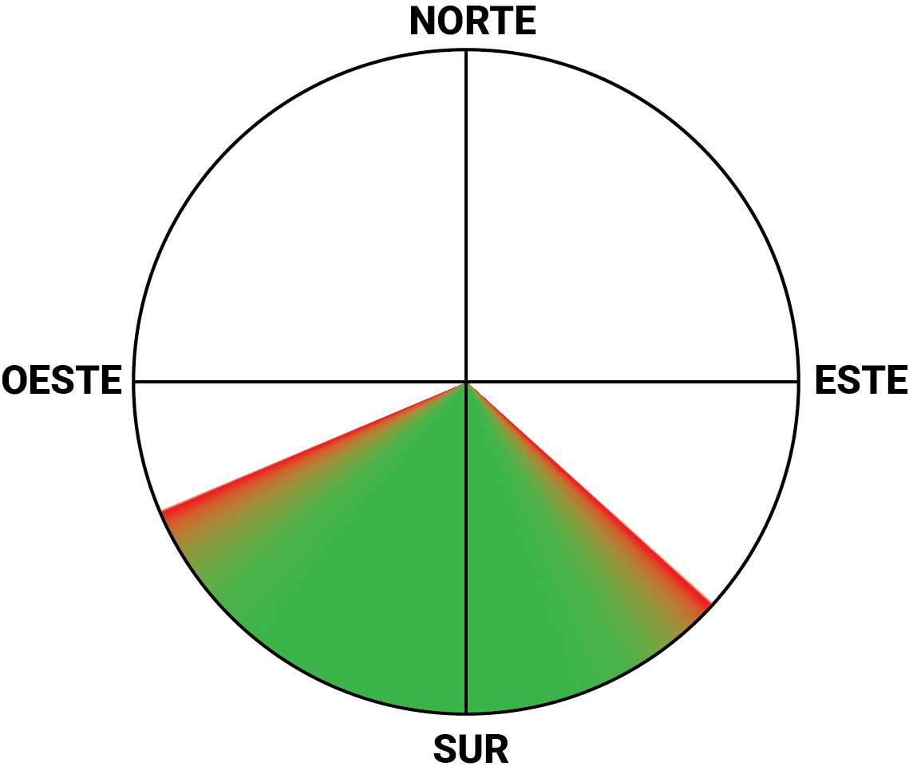
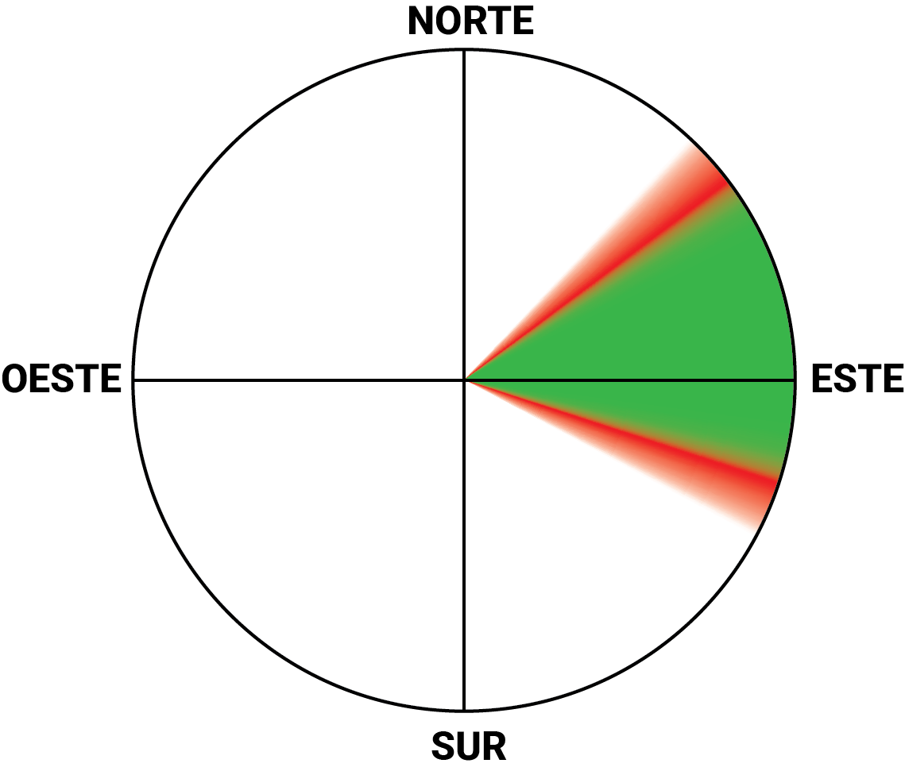

Tapalpa
Tapalpa
Las Antenas
LevelPG Intermediate, HG Advanced
Altitude2,208 m a.s.l.
WindEast
CoordinatesN 19.93942° O 103.65272° · See on Google Maps →
AccessAny type of vehicle
Operated byClub de Vuelo Libre Jalisco
Contacts—

Tapalpa
Gravedad Cero
LevelPG Intermediate, HG Advanced
Altitude2,212 m a.s.l.
WindNortheast – East (good), Southeast (possible)
CoordinatesN 19.9422° O 103.654° · See on Google Maps →
AccessAny type of vehicle
Operated byGravedad Cero
Contacts—

Tapalpa · Hillside
La Ceja
LevelPG Intermediate, HG Advanced
Altitude2,180 m a.s.l.
WindEast – Southeast – South
CoordinatesN 19.93559° O 103.65375° · See on Google Maps →
AccessAny type of vehicle
Operated byAventuras La Ceja
ContactsJuan Carlos Madrigal +52-341-108-9337 · Diego Vásquez +52-33-3903-2373

Tapalpa · Hillside
Los Papalotes landing zone
LevelPG Intermediate, HG Advanced
Altitude2,180 m a.s.l.
WindEast – Southeast – South
CoordinatesN 19.93559° O 103.65375° · See on Google Maps →
AccessAny type of vehicle
Operated byLos Papalotes
ContactsJuan Carlos Madrigal +52-341-108-9337 · Diego Vásquez +52-33-3903-2373
Tapalpa · Hillside
El Arbolito (Piano) landing zone
LevelLanding conditions are very variable
Altitude1,350 m a.s.l.
WindVariable
CoordinatesN 19.95618° O 103.61451° · See on Google Maps →
AccessAny type of vehicle
Operated byVuelo Libre Jalisco
Contacts—
Jalisco
Jalisco
El Chante
Level—
Altitude2,043 m a.s.l.
WindNo data
CoordinatesN 20.3067° O 103.393° · See on Google Maps →
Access—
Operated by—
Contacts—
Jalisco
Tepa-trepa
Level—
Altitude2,369 m a.s.l.
WindWest (possible)
CoordinatesN 20.7615° O 102.61° · See on Google Maps →
Access—
Operated by—
Contacts—
Jalisco
Atotonilco
Level—
Altitude2,091 m a.s.l.
WindSouthwest (good), South (possible)
CoordinatesN 20.5593° O 102.554° · See on Google Maps →
Access—
Operated by—
Contacts—
Jalisco
Mazamitla
Level—
Altitude—
WindNo data
Coordinates—
Access—
Operated by—
Contacts—
Coast · Puerto Vallarta
Conchas Chinas
Level—
Altitude131 m a.s.l.
WindSouthwest (good), Southeast – South (possible)
CoordinatesN 20.581° O 105.238° · See on Google Maps →
Access—
Operated by—
Contacts—
Rest of Mexico
Network under construction — sites registered on ParaglidingEarth outside Jalisco. Basic profiles for now; we will keep adding access and local contact details.
State of Mexico
Valle de Bravo · La Torre
Level—
Altitude2,166 m a.s.l.
WindWest (good), Southwest – Northwest (possible)
CoordinatesN 19.1846° O 100.114° · See on Google Maps →
Access—
Operated by—
Contacts—

State of Mexico
Valle de Bravo · El Peñón
Level—
Altitude2,336 m a.s.l.
WindSouth – Southwest – West (good), North – Southeast – Northwest (possible)
CoordinatesN 19.0616° O 100.091° · See on Google Maps →
AccessLa Albarrada, Valle de Bravo, State of Mexico
Operated byClub Peñón
Contacts—

Aguascalientes
Picacho
Level—
Altitude2,348 m a.s.l.
WindEast (good), Northeast – Southeast (possible)
CoordinatesN 21.8774° O 102.422° · See on Google Maps →
Access—
Operated by—
Contacts—

Colima
La Cumbre
LevelIntermediate (EN B) and up · beginners only with an instructor
Altitude770 m a.s.l. takeoff · 390 m a.s.l. landing (380 m drop)
WindSoutheast (good), South – Southwest (possible) · best between 10:00–13:00
CoordinatesN 19.1813° O 103.692° · See on Google Maps →
Access7.5 km south of Colima via the Colima–Jiquilpan highway + 3.5 km of cobblestone road; small cars can reach the takeoff
Operated byParapente Colima
ContactsFacebook · @parapente.colima · Instructor Benjamín Silva (cert. AVLM) @benjamin.anda.volando

Oaxaca
Zaachila
Level—
Altitude2,314 m a.s.l.
WindNortheast – East – Southeast (good), North – South (possible)
CoordinatesN 16.9328° O 96.8532° · See on Google Maps →
Access—
Operated by—
Contacts—
